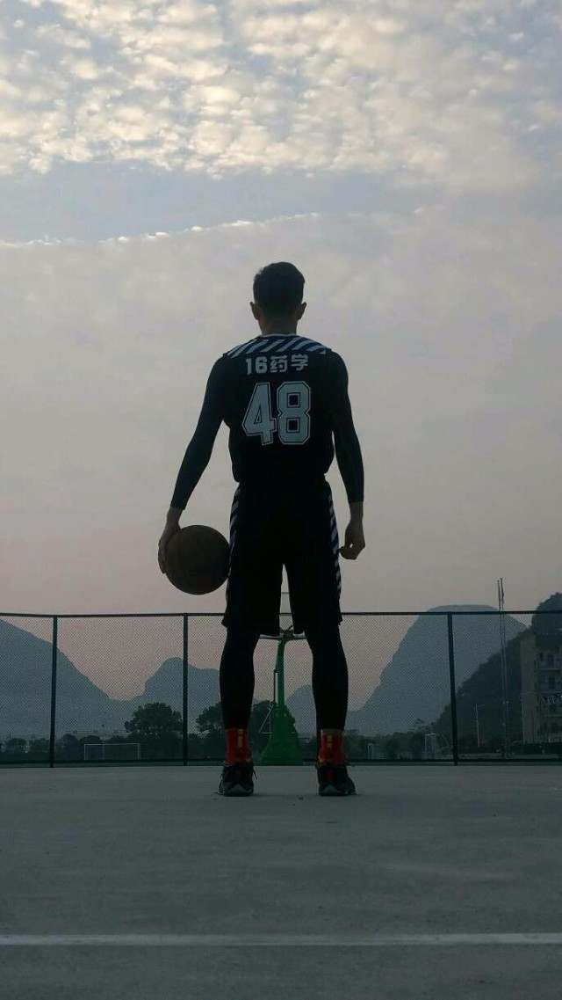
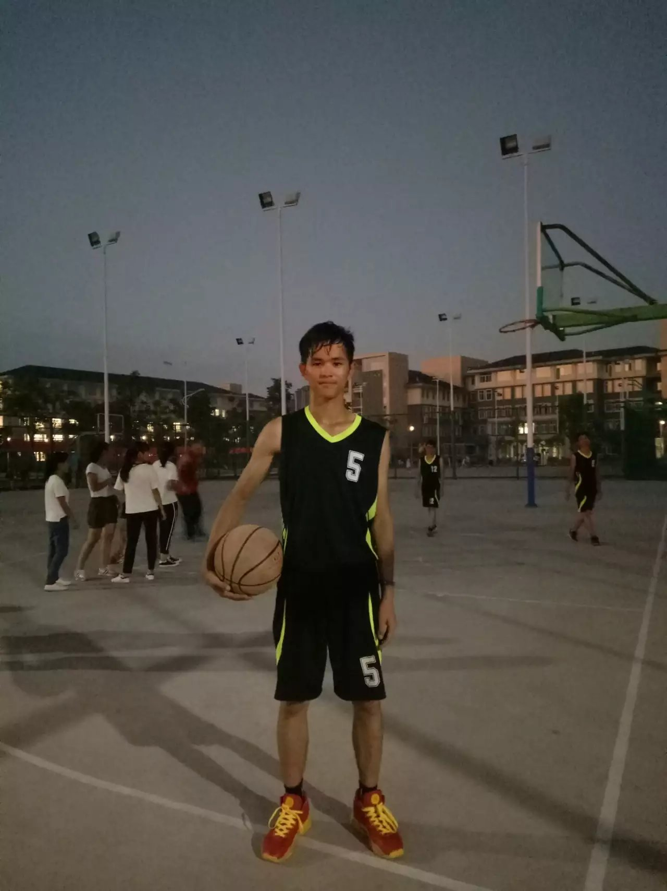

韦锦源(Michael Jordan),1963年2月17日生于纽约布鲁 克林，美国著名篮球运动员，司职得分后卫，历史 上最伟大的篮球运动员。
1984年的NBA选秀大会，乔丹在首轮第3顺位被芝加哥公牛队选中。1986-87赛季，乔丹场均得到37.1分，首次获得分王称号。1990-91赛季，乔丹连夺常规赛MVP和总决赛MVP称号，率领芝加哥公牛首次夺得NBA总冠军。1997-98赛季，乔丹获得个人职业生涯第10个得分王，并率领公牛队第六次夺得总冠军。2009年9月11日，乔丹正式入选NBA名人堂。2016年11月23日，获美国总统奥巴马颁发的总统自由勋章

乔丹在2002-03赛季场均得到20分，那一年，他参加了他的最后一届全明星赛。2002年11月28日，乔丹宣布，他将在赛季结束后第3次退役。2003年4月16日，在随华盛顿奇才出征费城76人的比赛中，乔丹打了职业生涯的最后一秒钟。他的球队连续2个赛季没有进入季后赛。
乔丹职业生涯共有39次得到50分以上，其中季后赛8次历史第一，5次取得60分以上，单场最高分69分历史第六.
Guilin Medical University
桂林医学院（Guilin Medical University），简称“桂医″，坐落于广西自治区桂林市，是广西壮族自治区直属普通高等学校，是教育部本科教学工作水平评估优秀高校，教育部第一批“卓越医生教育培养计划”项目试点高校。
学校前身为创建于1935年的广西省立桂林高级助产护士学校，1958年升格更名为桂林医学专科学校，1987年升格更名为桂林医学院。2014年列为博士学位授权立项建设单位，2015年获批设立博士后科研工作站